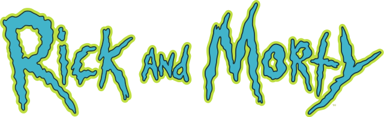

<nav class="navbar fixed-top">
  <div class="content-menu">
    <span class="title">
      
    </span>
    <div class="content-buttons">
      <button
        type="button"
        class="btn-home btn btn-outline-light"
        [ngClass]="{ active: activeButton === 'home' || actionNav }"
        (click)="setActive('home')"
        [routerLink]="['/home/characters']"
      >
        <i class="fa fa-home fa-lg" aria-hidden="true"></i>
        Início
      </button>
      <button
        type="button"
        class="btn-favorites btn btn-outline-light"
        [ngClass]="{
          active: activeButton === 'favorites' && !actionNav
        }"
        (click)="setActive('favorites')"
        [routerLink]="['/home/characters-favorites']"
      >
        <i class="fa fa-heart" aria-hidden="true"></i>
        Favoritos
        <span
          class="count-favorites"
          *ngIf="favorites$ | async as favorites"
          [ngClass]="{
            'active-home': activeButton === 'home' || actionNav ,
            'active-favorites': activeButton === 'favorites' && !actionNav
          }"
        >
          {{ favorites.length }}
        </span>
      </button>
    </div>
  </div>
</nav>
